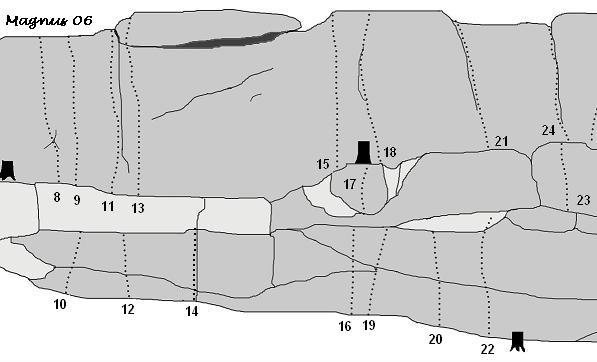

Snuggtaskeberg
GPS: 59.456970,17.958318
Allmänt
Trevligt litet boulderområde som ligger i Törnskogen i Sollentuna kommun. Området är uppdelat på en handfull väggar och i dagsläget är närmare 80 problem gjorda. Samtliga problem i Snuggtaskeberg toppas ut. En hel del high-balls finns så det rekommenderas att ta med kompetent spottare om man vill försöka på samtliga problem.
Historik
Snuggtaskebergs klätterhistoria är liksom många andra mindre områden bortom de stora klätterstråken höljt i dunkel. Någon form av aktivitet har bedrivits, det vet man, men inga dokument har återfunnits där problem beskrivits. Under 2003-2004 återupptäcktes området av en ny generation bouldrare som borstade fram vägg efter vägg och numera är det mesta självklara gjort, det som återstår är de hårdaste linjerna som i vissa fall är smått utopiska.
Karta & Vägbeskrivning
Bil
Från Danderydsvägen svänger man in på Frestavägen. Efter ca 800 meter tar man vänster in på Båtmansvägen och sedan höger på Gammelvägen. Följ Gammelvägen tills dess slut. Där finns parkering invid Turebergs klubbstuga.
Kommunal transport
Tag buss 527 från Sollentuna station mot Vaxmora. Kliv av vid Båtmansvägen. Gå ca 700 meter tills du kommer fram till parkeringsplatsen vid klubbstugan.
Hitta från parkeringen
Följ stigen från parkeringen tills huvudväggen skymtar på vänster sida. Orientera er sedan med hjälp av översiktskartan för att nå de andra väggarna.
Översikt
Huvudväggen
Den största väggen i området och den vägg som har flest problem. Väggen är uppdelad i flera nivåer. Väggen har varierande kvalitet. Vissa delar är lite spröd, andra mycket fastare.
Gröna Lund
är ett problem som man inte bör missa på denna vägg.
Vänstra delen
- 1
- Nyfiken orienterare
- 3+
- Ta kanten, upp och mantla.
- 2
- Söderkisen
- 4+
- Små grepp, vidare till kanten.
- 3
- Mezmerize
- 5-
- Lätt arête med en något känslig avslutning.
- 4
- Dubbelmantlingen
- 5-
- Mantla upp på starthyllan, nå ett grepp för vh. Upp till kanten och mantla igen.
- 5
- Mattis dubbelmantling
- 4
- Lätt dubbelmantling th om ''Dubbelmantlingen''.
- 6
- Ny
- 6B
- Sittstart. Teknik och juggar. Hög.
- 7
- Petter unleashed
- 5
- Sittstart med ev layback. Gå mot kanten.
Mittendelen

- 8
- Teach the children to warship satan
- 5
- Klippans jungfrutur. Tunna grepp tar en till toppen.
- 9
- Cinemasten
- 5
- Den självklara linjen på röda partiet.
- 10
- Tidsbrist
- 4-
- Skön uppvärmningsmantling på bra grepp.
- 11
- Neuros
- 5+
- Problemet kräver en ganska lång sträckning. Mental avslutning, mången god bergsman har här valt att retirera.
- 12
- Lättare än Fretless
- 5
- Tunna steg, mantla. Fin!
- 13
- Anderssons stulna linje
- 5+
- Highball. Kul start, bra grepp, krimp på toppen. Känslig.
- 15
- Psykos
- 5+
- Start i kristallist för hh. Vidare upp via hyfsade grepp.
- 16
- Borststöld
- 5
- Start i snedsprickan, upp till kanten, mantla.
- 17
- Morfomannen
- 3+
- Lätt problem upp till trädet.
- 18
- Lättare än svår
- 5-
- V sidtag, h krimp, upp till toppen.
- 19
- Lagens långa arm
- 5
- Sittstart, sträck till kanten, mantla.
- 20
- Mantlingspecialistens lilla godbit
- 6A
- Start i slopers på kanten, upp via känslig mantling.
- 21
- Skjut en baptist
- 4-
- Sprickan th om Lättare än svår.
- 22
- Knäad
- 6A
- Start i krimplist, upp via krimpers och mantla.
- 23
- Fontankänsla
- 4+
- Mantlingsproblem.
- 24
- Mattanten har snopp
- 5
- Sprickan. Mental beslutsamhet på slutet kan behövas.
Högra delen
- 25
- Vila sig i form
- 5+
- Starta i sidtag, upp höger till hyllan och vidare till toppen.
- 26
- Gröna Lund
- 6B
- Hårdare variant på Vila sig i form. Start på krimper för hh och sidtag/undercling för vh. Lås av, skicka till hyllan och gå sen till toppen.
- 27
- Fjantkänsla
- 3+
- Mantlingsproblem.
- 28
- Rektal fissur
- 4+
- Stora sprickan, rejält rensad som tur är då den är tyngre än vad man först tror.
- 29
- Aeternum Vale
- 5+
- Th om stora sprickan, tunn i mitten, läskig på slutet.
- 30
- Stel som ett lik
- 6A
- Tekniskt problem som blir lättare på slutet.
- 31
- Ni borstar - jag sänder
- 4+
- Th om ''Stel som ett lik''. Skön start.
DDT-väggen
Mycket fin vägg med lite svårare problem. Här återfinns godbitar som
Paranoid mongoloid
,
Megaplume
och
Marmaris
.
{|
| width="450px" |
- 1
- Paranoid mongoloid
- 6A+
- Höger på sidtag, h fot på bra steg. Tag vh till gaston, kom upp, sträck och mantla.
- 2
- Lustiga huset
- 7A
- Vh på krimper, hh i sprickan. Kliv upp, tag tunt grepp och sträck till toppen, mantla. Hård!
- 3
- Hale hopp
- 6B
- Start i krimpers, skicka mot kanten och mantla ur.
- 4
- Slicka uppåt - Sparka neråt
- 5+
- Start i tunna flak, catch på toppen. Betydligt lättare om man är längre än 185 cm lång - och betydligt tråkigare.
- 5
- Upponer
- 3
- Stora sprickan.
- 6
- Högerpolitik
- 3+
- Krystad variant på ''Uppochner''. Till toppen utan att använd väggen tv om sprickan.
- 7
- Banalt halt
- 6A
- Tunn i starten, sträck till bra list, resten är lättare.
-
- Nästan som i Bohuslän!
- 5
- Ss med ett handjam, fötterna i "grottan".offwidth sprickan/kaminen upp hela vägen. Kliv rakt upp ur.
- 8
- BlocBusters (who you gonna call?)
- 7A
- Hoppstart till bra grepp. Vidare rakt upp.
- 9
- Megaplume
- 6B
- Vh på kristallsidtag, hh på sloper. Lås av och sträck till litet grepp för hh. Vidare till hyllan och mantla.
- 10
- Marmaris
- 6C
- Följ kanten snett uppåt, fötterna på vägg.
- 11a
- Tropicana
- 5-
- Slabben.
- 11b
- Tropicana - no hands
- 5+
- No hands variant.
Svaväggen
Vägg strax bortom DDT-väggen. Har både vertikala problem och sva-problem.
{|
| width="450px" |
- 1
- Projekt 10
- 6A+
- Sittstart, sedan rakt upp.
- 2
- 22:30
- 5
- Hh i undercling, vh på crimp, gå mot toppen, mantla.
- 3
- Mattis - den svenska gambianen
- 5-
- Starta i små lister, följ slopekanten snett uppåt vänster.
- 4
- Pappaledig
- 4+
- Starta som ''Mattis - den svenske gambianen'' men gå rakt upp efter första flytten.
- 5
- After Eight
- 5
- Starta via rampen och sen upp.
- 6
- Twisted Individual
- 6A+
- Upp på den tunna väggen. Hyllan på ''The moisty slab'' ingår givetvis inte. Mycket känslig bit!
- 7
- The moisty slab
- 4+
- Starta med hyllan, sen rakt upp på slabben strax höger om sprickan.
- 8a
- Glöm inte kritpåsen
- 4
- H fot på liten kristal, stega upp mot toppen.
- 8b
- Glöm inte kritpåsen - no hands
- 5
- Utan händer.
- 9
- No hands heaven
- 4
- Upp utan att använda händerna.
Solväggen

Trevlig vägg som ligger uppe på platån ovanför Huvudväggen och DDT-väggen. Två fina problem gör klippan väl värd ett besök.
{|
| width="450px" |
- 1
- Ännu mer mantelnödig
- 6A+
- Rakt upp och mantla.
- 2
- Solochvåraren
- 5
- Rakt upp och mantla.
- 3a
- Medels gympaskor
- 4+
- På hörnet, mantla.
- 3b
- Medels gympaskor - sittstart
- 5
- Sittstart på hörnet.
- 3c
- Frasses deg
- 6A+
- Variant på 3b, enbart sprickan för händerna.
- 4
- Mantelnödig
- 4+
- Väggen tv om sprickan, mantla.
- 5
- Bonus
- 6A
- Start i krimpers. Upp på svaet utan att använda kanten tv.
- 6
- Utan finess
- 5
- Upp till slopers och mantla ut. Hyllsystemet th är off limit.
Höga väggarna
Samlingsnamn på de klippor som ligger längts bort av de vi hittat. En riktigt hög highball finns här, men också många lägre problem.
{|
| width="450px" |
- 1
- Pajero Loco
- 5
- Omfamna blocket och mantla.
- 2
- Vänsterprofilen
- 5-
- Sittstart, sen upp längs kanten.
- 3
- Blodvite
- 5+
- Upp i sprickan, avsluta med mantling.
- 4
- Stigmata
- 5
- Genom taket, Mantla på slutet.
- 5
- Stackblock
- 6A
- Start i små grepp. Snett upp genom taket. Mantla.
- 6.5
- Sista dagen på jorden
- 6c+
- Insteg någon meter till vänster om problem nr7 ut på väggen till H följ diagonala sprickan åt V.och till topps. Rammla inte ner. Ledgraderad.
- 7
- Mattis missade onsighten
- 2-
- På med storskorna. Glöm ej picknickkorgen.
- 8
- Väsby konsthall
- 6B
- Endast arêten för händerna.
- 9
- Leo bajsar löst
- 6A
- Start med vh på arêten och hh i undercling.
- 10
- Små vita maskar
- 5+
- Undvik att vidröra trädet med rumpan.
Revolverväggen
Liten fin vägg som ligger bortanför Höga Väggarna. Fem problem är gjorda och några till går nog att få ut av denna granitvägg.
{|
| width="450px" |
- 1
- Bamsefar
- 5-
- Start i listen och upp via ett bra grepp tv.
- 2
- Revolverkäke
- 5
- Start i listen och sen upp till små krimplister.
- 3
- The move
- 4+
- Tv om arêten.
- 4
- Gustav och rönnbären
- 5-
- Arêten höger om Revolverkäke.
- 5
- Zupa Krimp
- 6A
- Start i krimpers och sen upp.
Koreaväggen
Längre bort mot stora vägen finns ytterligare en liten vägg med par problem gjorda. Senaste tillskottet, ej helt rensad ännu.
{|
| width="450px" |
- 1
- Kim Jong Il
- 5-
- Rakt upp för väggen. Avsluta upp på svaet.
- 2
- Kim Il Sung
- 5+
- Längs den svaiga arêten.
Kategori:Norra Stockholm
Copyright (C) Permission is granted to copy, distribute and/or modify this document under the terms of the GNU Free Documentation License, Version 1.3